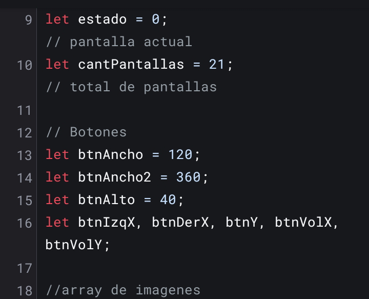
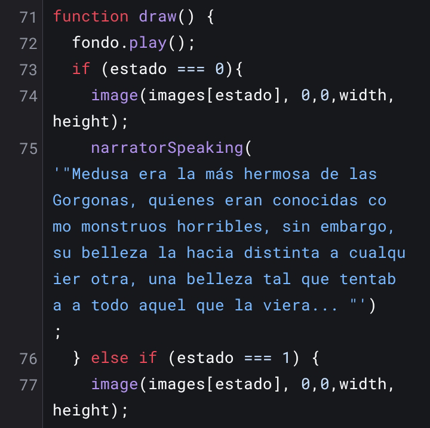
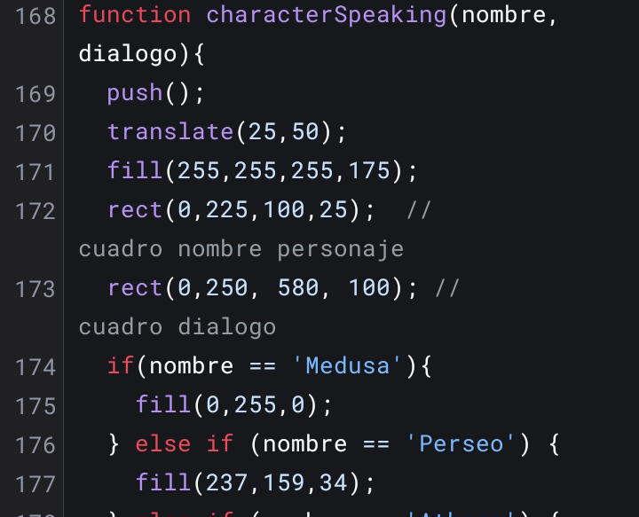

Temática: Medusa
Puntos clave de la Historia:
:- Medusa era una Gorgona Bella
- Poseidon abusa de ella o la engaña
- Athena los descubre y castiga a Medusa
- Medusa es desterrada, y más tarde asesinada por orden de Athena
Los mitos y leyendas griegas a menudo tienen varias permutaciones de distintas fuented y formatos, en la mayoría, Medusa es retratada como una mujer hermosa,a veces una sacerdotisa de athena, otras como una Gorgona,la versión que tomamos es una de las que toma a Medusa como parte de las hermanas gorgonas,quien por su belleza, es atrapada por Poseidón y engañada para acostarse con él, el resto, es bien sabido, el castigo de Medusa de ser horrible, si exilio, y posterior muerte a manos de Perseo,el campeón de Athena
Integrantes: Mauro y Diego
Diego es mi compañero, no hablamos mucho, pero siempre trabaja y se interesa por la materia,y no puedo pedir mas, es un gran compañero,es un recursante de la materia así que tenia mas mano en los temas que yo así que siempre me ayudó mucho, y es algo que valoro un montonaso
Mauro soy yo, y sinceramente acá no se que poner, soy estudiante de la UNLP desde 2055, asi que soy muy nuevo en todo,pero hago lo que puedo con lo que tengo, hasta ahora creo que tuve un buen año, y realmente disfruté cursar programación

Proceso de Creación
Nuestros pasos
en esta seccion explicaré de forma breve los pasos que seguimos para hacer la historia interactiva
Esqueleto del Código
Para el Código no nos complicamos demasiado,usamos variables globales para guardar posteriormente los assets necesarios, sonidos, arrays de imágenes y variables utiles para posteriormente crear el juego mas cómodamente
En PreLoad cargamos el Array con todas las imágenes necesarias hechas por Ia,aunque inicialmente cuando hicimos esto solo pusimos una imagen de placeholder, ademas en preload se cargaron en las variables correspondientes los sonidos que se usarían más tarde
En el SetUp usamos las variables globales de botones y les asignamos sus valores a cada una, paso vital para la progresión en la aventura visual
En el Draw Principalmente usamos un IF de tamaños colosales, en él,cada caso según la variable estado, mostraba una imagen distinta con su respectivo diálogo y opciones y botones si las habia, aqui también se llama a dos de las funciones que creamos
En las Funciones que hicimos, Narrator y Character Speaking siguen un patron similar, toman diálogo,y en caso de character, toman el nombre, esto no es mas que una forma de dar una mayor facilidad a la hora de crear y editar el Código para nosotros,ya que las funciones también se encargaban de crear el cuadro de texto y alinear los textos para que todo encaje bien, ademas de la funcion de DrawButton y Draw Option que manejaban conceptos similares para la creación de botones interactuables



Escritura
Yo fui el que escribio a mano todos los diálogos del juego, manteniendo en cuenta que no debia ser muy explicita, intente evitar la parte de la historia sobre violación, y la reemplace por una seducción mas o menos consensuada,aunque fue el único cambio que hice en respecto,los demás diálogos tratan de seguir el arquetipo de personajes que representan cada uno
Imagenes
Tal como pidio la consigna, usamos una IA para crear inagenes y representar distintas partes de la historia, esta es mi parte menos favorita teniendo en cuenta que básicamente la ia es tonta y no sabe mantener coherencia, y yo queria que todo manteniese estilos similares pero es algo muy difícil de lograr con IA
Audio
Menti,esta SI es mi parte menos favorita, lo que en teoria era rapido y divertido de hacer se transformó muy rápido en un descenso a la locura pot los errores, que si el audio era incompatible,que si el audio de traba y rompia ls página,al final resulta que solo era culpa del navegador y mi equipo des actualizado, tuve que seguir así,pero realmente no estoy contento com esta parte

Probar los resultados
Por aqui vas a ser capas de probar el juego que te e detallado, juega y disfruta la historia trágica de Medusa, aunque esta ve, tal vez puedas verla tener su final felíz